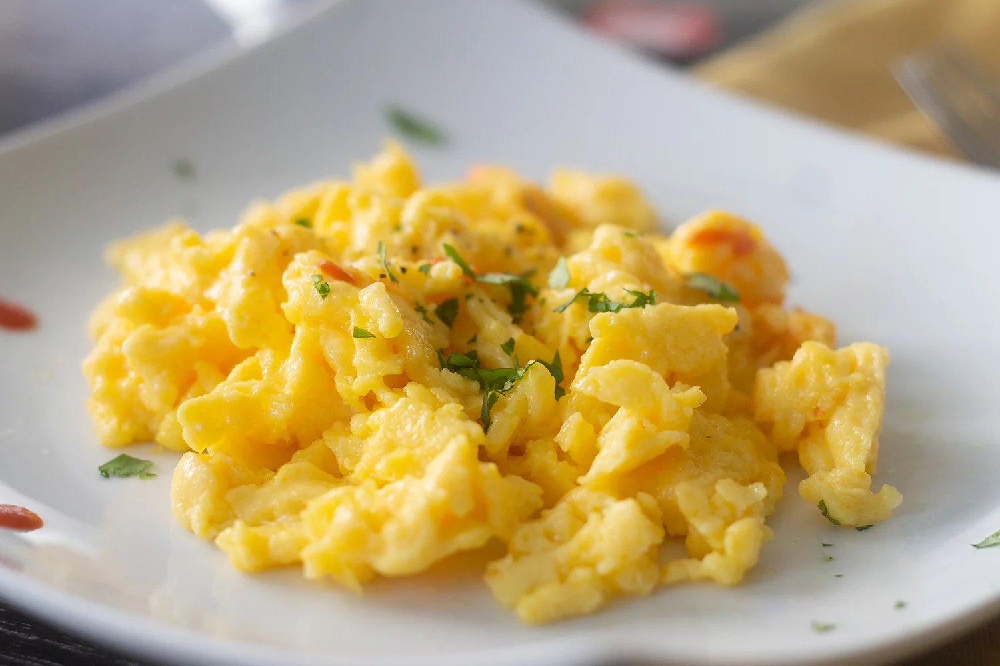

Fluffy scrambled eggs

Description
In search of tender, fluffy scrambled eggs?
A chef-approved method for any morning.
Ingredients
- 4 large eggs
- 1 pinch salt
- 4 teaspoons butter
Steps
- Whisk eggs with salt until completely combined and very foamy.
-
Melt butter in a skillet over low heat until bubbling.
Add whisked eggs; cook, stirring frequently for even, moist curds, until thickened and creamy, but still shiny, 2 to 3 minutes.
- Remove scrambled eggs from the pan before they begin to look dry, as they will continue to thicken off the heat.